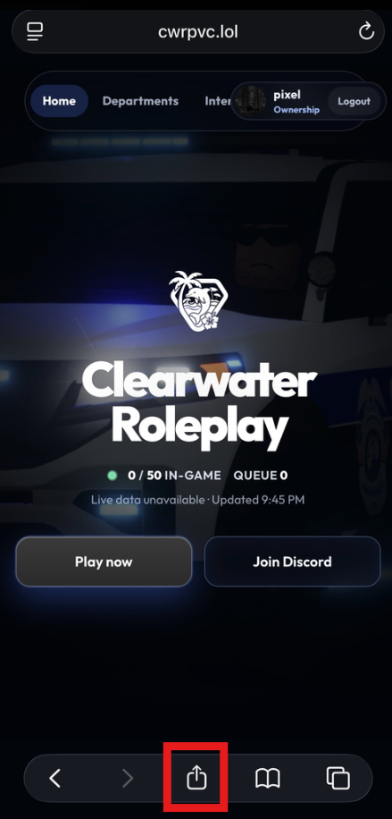
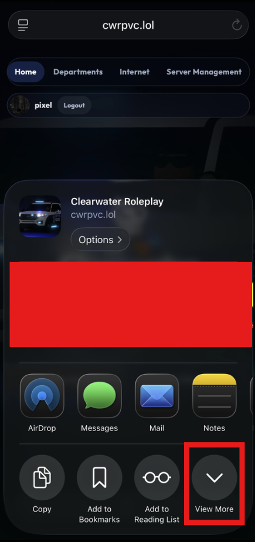
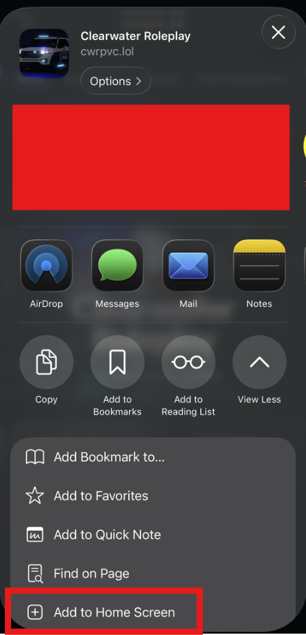
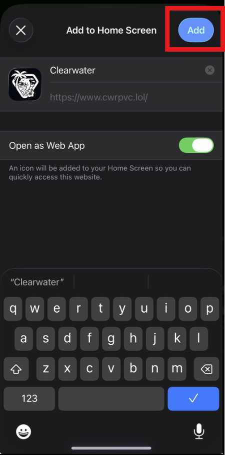

Clearwater Internet guide
Clearwater Internet V.2
Start
Upon entering the website, you will find yourself on the home tab, where you can find our active player count. Then, you can navigate to the departments tab, and our internet tab. Once you click onto the internet you can set up your account via the settings tab and start posting in the home tab.
Home Page
On the home page you can find a “For you” page which will show recommended content and trending content, find the most recent content by selecting the “Recent” tab, or you can see posts from who you are following by selecting the “Following” tab. See our official posts made by our only account on the “Official” tab.
You can create a post by starting to type in the post creator. You can pick from a wide variety of GIFs using the GIF button and selecting one. You can remove it by clicking the “Remove” button on the GIF. Add an image by clicking on the image icon and selecting your image; you can remove the image by clicking the “Remove” button on the image. You can add an emoji by clicking on the emoji button, and then choosing an emoji. Mention a user by either typing the @ sign or by clicking the @ symbol on the bar. You can create a poll by clicking on the icon with 3 lines, add a poll question, 1–4 options, and then selecting the amount of day(s). You’re all set and can now click the “Post” button.
Report a post by clicking the 3 dots, like by clicking the heart button, bookmark by clicking the bookmark button, and share by clicking the share button. On the right side you can find a search bar where you can search for posts and usernames, a “What’s happening” tab with trending hashtags, a sponsored ad below it where you can click “Learn” to learn about sponsored ads or report the advertisement, and an “Account” button which will take you to the creator’s account. Below, you can find a “Who to follow” tab with trending accounts we think you might like!
Wallet
Navigate to the Wallet which is under the Home tab. You will find 6 tabs — Overview, Salary, Advertise, Market, Levels, and Send. We will start with Overview. You can find your balance under the “Balance” text. We use a roleplay currency called Clearwater Credits. You can find how many daily credits you make under the “Daily credits” text. You receive C$75 every 24 hours; however, donors, contributors, and staff make extra credits. You can find your transactions under the “Transactions” tab which has all things that have made you credits or that you’ve spent credits on.
The Salary tab shows weekly department pay. If you hold a paid role in a department Discord server, you qualify for that unit’s weekly Clearwater Credits payout. Different ranks can be paid different amounts; you receive the highest matching role in each department. Qualifying in multiple departments stacks — each department pays separately into your wallet on the schedule Ownership configures.
Now, we will move onto the next tab which is “Advertise.” You can purchase sidebar and feed post advertisements. Select one of those options and then select Create. You are required to have a business account to do this, which will be spoken about later in the guide. Then fill out the required fields, and you can submit the advertisement for staff review which will cost C$1,200. You can purchase “boosts” for your advertisement by using the boost chances.
Next we will head to the Market. Here you will find the “Credit store” where you can pay Robux (Roblox digital currency) to gain Clearwater Credits. Before you purchase, please link your Roblox account using the “Verify” button in Market. You can then click the “Buy on Roblox” button on any of the packs and gain the credits instantly.
We now move onto Levels. If you want an easy way to gain credits, you can gain them by chatting and leveling up. See your level and your progression in this tab.
Now we move onto the Send tab. In this tab you can send/request money from users. Select between the “Send” or “Request” button, then type in the member’s name, the amount you want to send/request, and any notes you might have. You will be notified by the bank via your messages.
Notifications & Messages
The notification center is where you can find all important information such as messages, likes, reposts, quotes, and more. In the Messages tab you can compose a new message by clicking on the “New message” button. Then you can write your message in the message creator, add a GIF, or an emoji. Report messages by reporting the account. Staff will then review all messages on the account.
Bookmarks
Create collection names by typing the collection name, then clicking the Create button. You can bookmark posts in the Home tab. More information can be found in the Home Page guide.
Profile & Settings
View your public profile, and check who you are following by clicking on “Following,” which will open a list with all users you follow. You can check who follows you by clicking “Followers,” which will open a list with all users who follow you. You can copy your profile link by clicking the “Copy link” button. You can filter between 5 tabs: Posts, Replies, Mentions, Media, and Likes. Firstly, you can see all posts which you’ve created on the Posts tab. See all posts you’ve replied to in the Replies tab. See who’s mentioned you in the Mentions tab. All images you’ve posted you can find within the Media tab. Find all posts you’ve liked in the Likes tab.
You can also select the “Settings” button or the “Edit profile” button which will take you to the Settings tab. In the Settings tab you can find Profile, Privacy, Appearance, and Account. On Profile you can select a profile banner from our collection of Clearwater photos. Remove your banner by clicking the “Remove banner” button. Select your page’s accent color using our color picker. You can edit your “About you” by clicking onto the text box and adding a bio.
In Privacy you can select between 7 different settings. In Appearance, set up your preferences, and in “Account” you can apply for the verification badge which will display on your profile by answering the question “Why do you want to be verified?” You can also apply for a business account by filling out the required fields. Deactivating your account will hide your profile and make your account unusable, but all data is saved. Deleting your account fully wipes your data from our system, other than required data which we have to keep for legal reasons.
Add Clearwater as an app
You can add Clearwater to your iPhone Home Screen so it opens like an app. Open cwrpvc.lol in Safari, then follow these steps.
-
Step 1 — Open Share
Tap the Share button in the Safari toolbar (the square with the upward arrow).

-
Step 2 — View More
In the share sheet, scroll the action row and tap View More.

-
Step 3 — Add to Home Screen
In the full action list, tap Add to Home Screen.

-
Step 4 — Confirm Add
Keep the name as Clearwater (or edit it), leave Open as Web App on, then tap Add. The Clearwater icon will appear on your Home Screen.

Update log
Short release notes live on the newsletter. This guide keeps the full walkthrough above.
Clearwater Internet V.2
Public launch for Discord members: Home, Wallet, Messages, Bookmarks, Profiles, and share links.
Open newsletterTerms of Service
Read the current Terms of Service on its dedicated page.
Privacy Policy
Read the current Privacy Policy on its dedicated page.